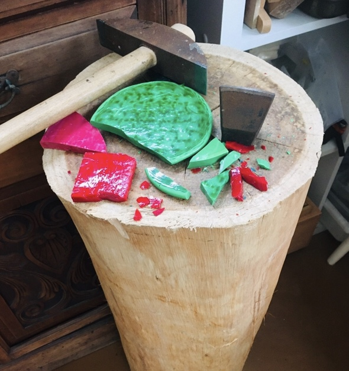
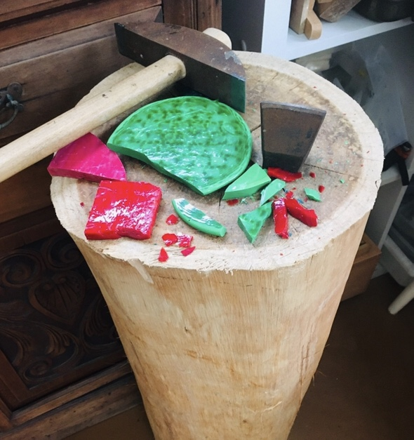

Behind The Scenes

Mosaicing offers me boundless possibilities for expression. My art and technical studies in Italy and Australia have given me the skills needed to mosaic using my favourite material - handmade glass.
I love to mix a variety of handmade glass such as Italian smalti, 24ct gold leaf tesserae, millefiori, stained glass and iridised glass. Mixed media interests me and I often include found objects, jewellery, bone china, antique glass and ceramic tiles.
The technique of placing small pieces of beautiful materials (called tesserae) together to form images enables me to immortalise the creations of my imagination.
 
